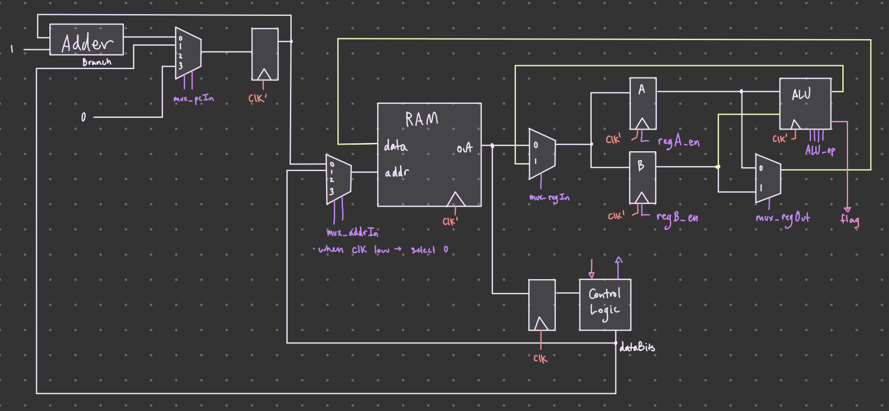

Single Cycle CPU
Overview
This is a passion project that I worked on during the summer of 2022.
Before my summer break, I took a class on digital logic and wanted to see how much I can expand upon this knowledge.
Towards the end of the course, we learned about control subsystem and data subsystem.
To explain briefly, the two systems worked together to achieve more complex behavior with less components.
I saw that only a simple extension of the control subsystem will make this into a programmable computer.
This is a very basic implementation of a CPU.
Please note that I worked on this project with very limited knowledge on computer architecture!
Regardless, I enjoyed figuring out how to achieve the desired behavior of a computer with the limited knowedge I had.
I believe I expanded my knowledge on computer architecture, ISA design, and debugging.
ps: It was meant to be part of a bigger project, which was to build a 16-bit computer in Minecraft.
I've build (in a simulation) a 8-bit, single-cycle computer.
- 32 deep, 1 byte wide memory. Implemented as 16 deep because of lag
- 2 registers, refered to as A/B register
- 11 ALU operations
- Instruction & data memory are shared
- ISA that allows memory-reg, ALU and control flow operations
I used Logic Circuit Simulator Pro on my phone to design and test, during my trip in France.
I admit that this enviroment was very difficult to work in.
One obvious downside was that this app did not have multi-bit support... so I had to connect everything one by one.
Here is the image exported view of the project:

As you can imagine, it was incredibly cumbersome to work on this on a mobile phone.
A lot of the work was done connecting the components, rather than designing and testing.
Upon closer inspection of the image, I hope you can notice all the major components of a CPU, like the program counter, memory, registers, and the control unit.
Details
I'd imagine that above image was quite confusing.
So here is a high level diagram of the whole architecture.

Key:
control signals
clock signal
flag signal
On the top left of the diagram, you can see the basic program counter implementation.
The next value of the PC is either [PC] + 1, value from branch and condBranch, or 0. This allows for basic control flow operations.
In the middle of the diagram, the RAM's addr input is either [PC] or instruction argument.
Each respective value is let through when clock is low and high.
So, on the falling edge of the clock, the memory is read at address [PC] (fetch), and on the rising edge, the memory is read from the argument of the instruction byte, when applicable (execute).
In retrospect, the choice of having shared memory was a bad idea, given that the memory module had a very small capacity.
I had to manage both instruction memory and program memory (stack variables), in the same 16 deep memory.
You can also imagine that programming on this was difficult and very limited.
On the right of the diagram, you can see the two A/B registers.
The values of each register is fed into the ALU, i.e. the ISA wants to always operate on values of A and B.
Also, note that the ALU has a flag output, which is set when using compare type ALU operations.
ISA
Each instruction was a byte long (8 bits) and 3 bits were used as the opcode.
There were total 2^3 = 8 instruction types.
- loadA addr
- loadB addr
- storeA addr
- storeB addr
- ALU dest op -- ALU always operated on the values of reg A and B
- branch addr
- condBranch addr
- halt
ALU operations (op) consists of:
- add
- sub
- cmp A > B
- cmp A < B
- cmp A == B
- A <- B
- B <- A
- bitwise NOR
- bitwise OR
- bitwise AND
- bitwise XOR
The cmp operation stores the result to the flag register of the ALU.